Style Needed

This code goes in your head tag. This identifies different classes set up by default for the picture container, picture, and the face identification border and lets you make quick CSS changes to each.
Classes and ID's Needed
These are preset classes and ids from the source files. Keep those and replace the source with your image.
Scripts Needed
These are the scripts needed. The first script links jquery and must be on top of the others. The second links the face detection and the last two are needed to help detect faces. The script below "ccv.js" calls out global jquery functions that are needed to help identify faces by connecting back to the main three required script files. Also, inside "jquery.facedetection.js" is where you can edit the amount of faces it will detect in a single image.
Disclaimer
Depending on the image, the face detection will not work. The faces must be clear and easily visible, however after my own testing I found some images that are like this still do not work. Also, when editing how many faces it will detect in "jquery.facedetection.js", you might have to increase or decrease the interval number despite not having that number of faces. For example, the image of Barack Obama has an interval set to "2" despite there only being one face to detect.